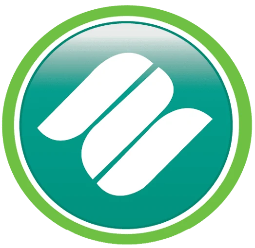
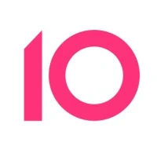
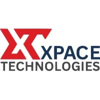
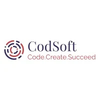
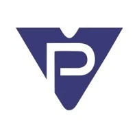
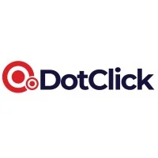
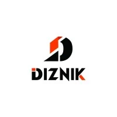
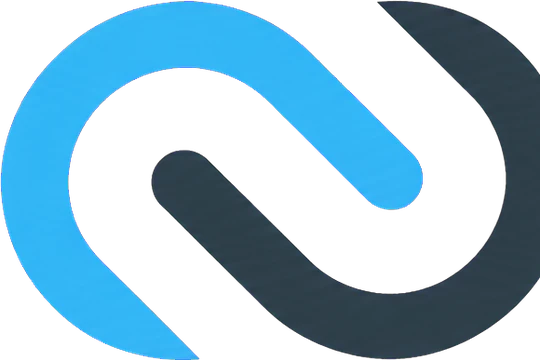

Full-Stack Systems
Responsive interfaces, REST APIs, scalable backend logic and databases built as one coherent product.
- PHP & Laravel
- JavaScript & React
- MySQL & MSSQL
Available for selected projects
I’m Muhammad Usama, a Full-Stack & Automation Engineer in Karachi. I connect thoughtful interfaces, dependable backends and AI automation into systems businesses can actually use.
Muhammad UsamaKarachi, Pakistan
Always building
Technologies I’ve shipped with
Professional journey








What I do
Responsive interfaces, REST APIs, scalable backend logic and databases built as one coherent product.
Practical workflows that connect LLMs, business data, scraping tools and third-party platforms.
Custom themes, plugins and WooCommerce work without fragile page-builder dependency.
OpenCV experiments, Firebase systems and structured scraping and analysis pipelines.
Career journey
Codencoders · Karachi
Advanced WordPress development, custom functionality and client site delivery.Decotechs · Karachi
Designed AI-driven workflows integrating APIs, databases, LLMs, Ollama, scraping, chatbots and social automation.Diznik · Karachi
Custom WordPress sites and client-focused web delivery.XPACE TECHNOLOGIES (Pvt) Ltd
Frontend, backend and responsive interface development.CodexCue
10Coders · Karachi
BrandSoft Solutions
CodSoft · Karachi
DigiSkills.pk · Karachi
Education
PAF-Karachi Institute of Economics & Technology
Matriculation
Certifications
Building Web Applications in PHP
Python Basics
Build a Full Website using WordPress
Introduction to Web Development
React.js AI Chatbot with ChatGPT, Gemini & DeepSeek
Curriculum vitae
Full-Stack & Automation Engineer
Full-stack engineer with 5+ years of hands-on experience across scalable web systems, custom WordPress development, backend architecture and AI-powered automation.
Codencoders — WordPress Developer · 2026–Present
Decotechs — n8n Automation Engineer · 2025–2026
Diznik — WordPress Developer · 2024–2025
XPACE Technologies — Web Developer · 2024
BrandSoft Solutions — WordPress Developer · 2023–2024
Have a system worth building?